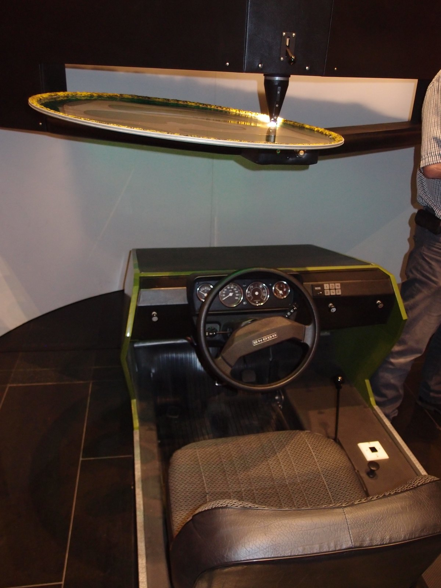

1980
Kraftwagenreparaturwerk Olomouc, Czechoslovakia
CSR Fahrsimulator Typ AT 80 (1980)
A Czechoslovak driving trainer that scored you on a mechanical dashboard — the wheel, gear lever and pedals were the whole test
